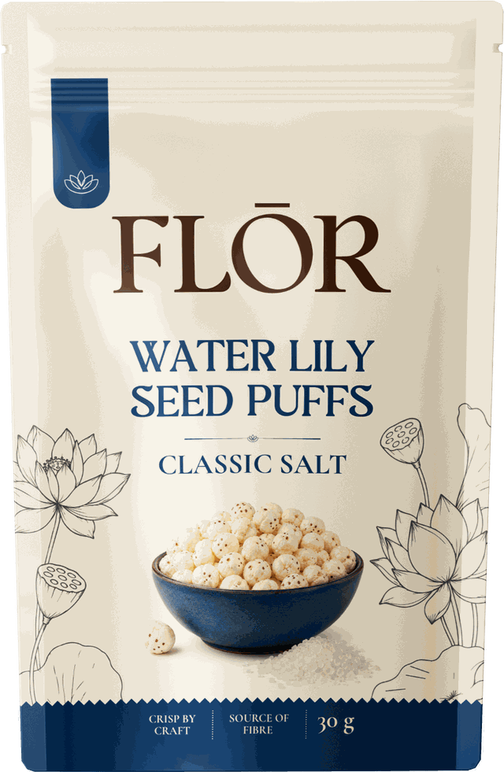
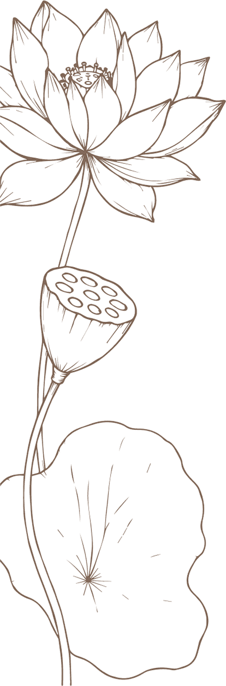
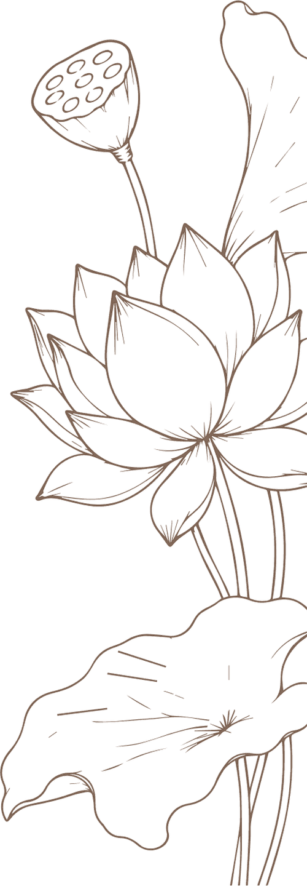
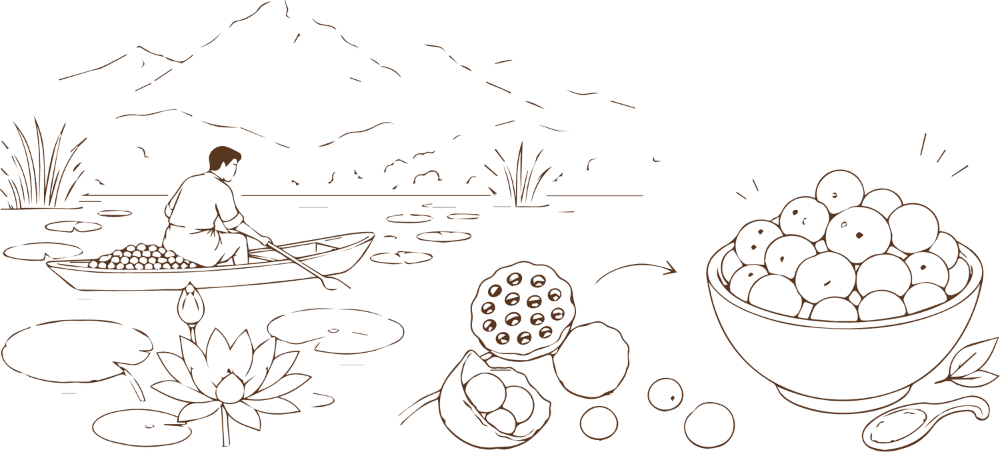
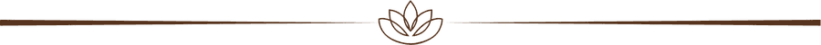
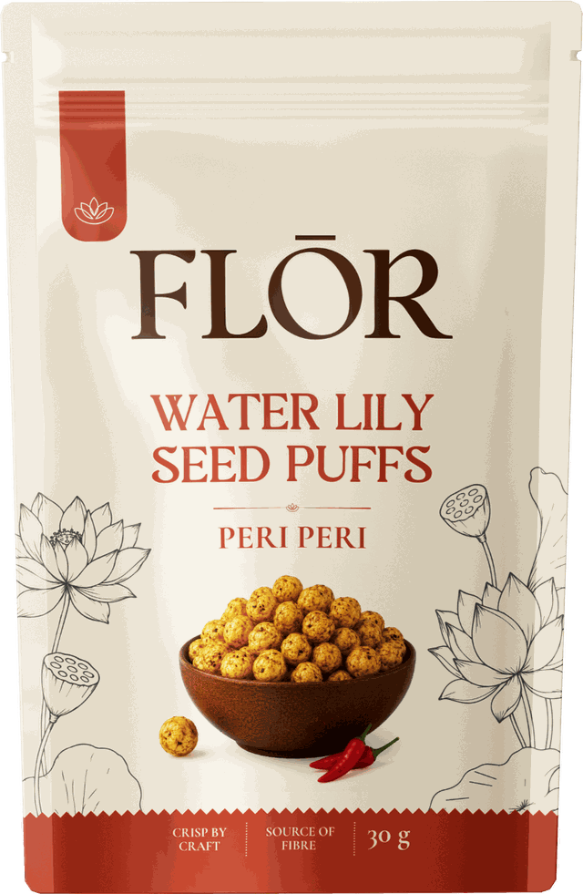
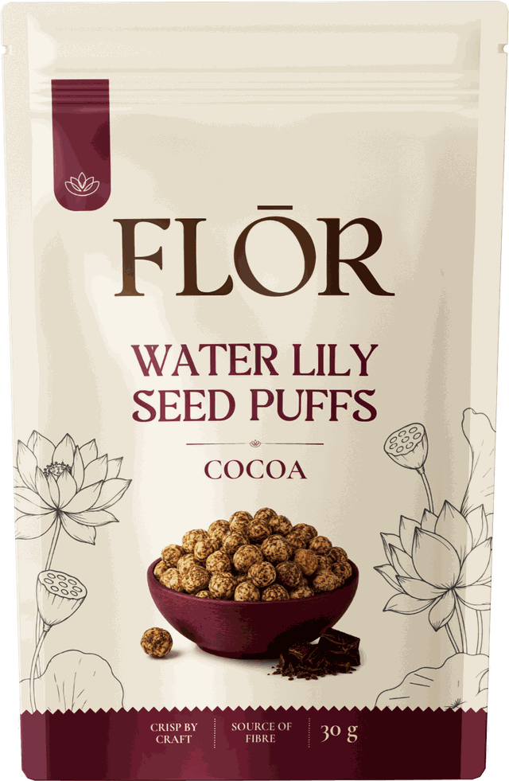

Classic Salt
Clean, savoury and properly crisp.


Food, experienced.
Water lily seed puffs from India. Light, crisp and quietly unexpected.
ScrollBecause food isn't just something to eat. It's something to discover, enjoy and remember.
The taste, the texture, where it comes from, the culture behind it, and the moments it becomes part of. The food we discover while travelling. The things we bring home. The flavours we introduce to someone else. The bowl we put out at four, something to share at six, or the little ritual of pouring yourself a bowl at nine.
We discover foods and snacks from different parts of the world and bring them to new tables — sometimes to share, sometimes simply to enjoy ourselves.
We start with an ingredient familiar in India but new to many elsewhere: makhana, transformed into light, crisp water lily seed puffs.

A rather unexpected transformation.
Makhana is the seed of Euryale ferox, a water lily traditionally cultivated in India. The seeds are harvested, dried and roasted until they puff into something light, airy and crisp.
Makhana has been eaten in India for generations. We wanted to bring it somewhere new — and let the ingredient speak for itself.
Light & crisp. FLŌR Puffs are seasoned with the same attention we give everything we make: enough to make them interesting, never so much that you lose the ingredient underneath.


Clean, savoury and properly crisp.

A little heat, a little more character.

Deep cocoa notes with a light, crisp finish.
Try one. Try all three. Put out a bowl.
| Classic Salt | Peri Peri | Cocoa | |
|---|---|---|---|
| Vegetarian | ✓ | ✓ | ✓ |
| Vegan | ✓ | ✓ | — |
| Gluten-free | ✓ | ✓ | ✓ |
| Source of fibre | ✓ | ✓ | ✓ |
| High in fibre | ✓ | ✓ | — |
30 g pouch. Crisp by craft.
We're getting the first pouches ready. If you'd like to stock FLŌR, or simply want to know when the shop opens, write to us.
hello@florpuffs.comIt's a must-have for us.
Sustainability isn't something we're adding to FLŌR because we're supposed to.
We want to understand the full journey of what we make — from the people growing and harvesting our ingredients to the materials we use to package them, and what happens to that packaging afterwards.
We're still at the beginning, so we're honest about what we haven't figured out yet. But we know where we want to go.
Today, our makhana is sourced through a trader. As we grow, we want to build a much closer relationship with the people behind the ingredient. We're exploring ways to source more directly and pay farmers a meaningful premium for the ingredient we buy.
For us, that means understanding more about how makhana is grown and harvested, who is involved, and how value is distributed along the way. It's not just about knowing where something comes from. It's about making sure the people at the beginning of the journey benefit from where it ends up.
Our current pouch isn't perfect. Makhana is highly sensitive to moisture, so protecting its crispness requires a high-barrier structure. Today, that means a multi-layer pack containing plastic and aluminium.
It works. But we'd like to do better. Our ambition is to move towards a mono-material, recyclable pack — ideally using recycled material where the right solution exists.
We're looking at materials, suppliers and structures that can give us the barrier protection the product needs while making the packaging simpler and more circular. We don't want to make a sustainability claim simply because a material sounds better. It needs to actually be better.
For us, this isn't just a packaging problem or a sourcing problem. It's the whole thing:
We're building that picture piece by piece. And as FLŌR grows, we want to share what we learn — including the parts we haven't solved yet.
Sustainability isn't a destination for us. It's a standard we want to build the company around.
We are Shourya and Nienke, based in Amsterdam.
Between us, we have spent almost two decades in consumer goods and the flower business — industries where sourcing, quality, packaging and presentation matter, and where a good product still has to make its way from producer to consumer.
We have travelled a lot, lived around different cultures and, like most people who are curious about the world, tend to come home with things we've eaten rather than things we've bought.
Eight years at Heineken in FMCG, after studying at Rotterdam School of Management and London Business School.
More than ten years in the flower business, working across sales and packaging, after studying at Rotterdam School of Management.
Food is often the best souvenir.
It gives you a taste of somewhere you've been, introduces you to somewhere you've never been, and creates experiences that stay with you. That is what we want to build with FLŌR Puffs: a company that discovers interesting foods from around the world and brings them to new tables.
Our first product is water lily seed puffs from India.
It's the beginning, not the destination.